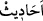
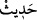
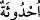

geçmektedir.
Kâşifî der ki: “Onu yalanladılar. Tevhîd, nübüvvet, ölümden sonra dirilme ve haşre
dâir ne söylediyse yalan zannettiler. Atalarını taklid ederek ve beğenilmeyen âdetlere
uyarak tasdik saâdetinden mahrum kaldılar.”
“Biz de onları birbiri ardından yok ettik” yâni helâk etme konusunda bazı nesilleri
bâzısına tâbi kıldık. İnkâr, yalanlama ve diğer günahlar gibi sebeplere sarılma
konusunda onların bazısının bazısına tâbi olduklarına göre bazısını bazısının peşinden
helâk ettik.
Kâşifî der ki: “Yani hiç birine mühlet vermedik; en son gelenleri evvel gelenler gibi
azaba çarptırdık.”
“Ve onları” helâk ettikten sonra kendilerinden sonra gelenler için “ibret hikâyelerine
dönüştürdük.” Yâni onların ne kendileri ne de eserleri kaldı. Sadece geceleri anlatılan,
hayret edilen ve saâdet ehlinden ibret alanların ibret aldıkları hikâyeleri kaldı.
“__WORD__ kelimesi, “__WORD__ veya “__WORD__ kelimesinin çoğuludur. “__WORD__, eğlence ve
hayret etme için anlatılan şeydir. Burada kasdedilen odur.
Kâşifî der ki: “Onların kıssalarını zikrettik. Yani halka azap verdik ki daima onların
azaplarını ansınlar ve bunları darb-ı mesel olarak kullansınlar. Sözün özeti şudur:
Onlardan halkın efsâne şeklinde söylediği hikâyeden başka bir şey kalmadı. Eğer onlara
dâir güzel bir söz kalmış olsaydı iyi olurdu. Bir ulu kişi şöyle demiştir:
Ölürsün bir gün geriye kalır hikâyen
Çalış gayret et ki güzel olsun hikâyen
Fakir (Bursevî) der ki: İlk beyit “__WORD__ kelimesinin iyi ve kötü şeyler hakkında
söylendiğine delâlet etmektedir. Bu, Ahfeş’in onun iyi şeyler hakkında söylenmediği
şeklindeki sözüne ters düşmektedir.”
“Artık îman etmeyen kavmin canı cehenneme!” Peygamberlere inanmayan ve onları
tasdik etmeyen topluluktan Allah’ın rahmeti uzak olsun.
Âyette tasdîkin kurtulmaya ve cennetlerde nimetlere ermeye vesîle olduğu gibi
îmansızlığın da helâke ve ateşte azap görmeye sebep olduğuna delâlet vardır.
Yâkub (a.s.) kendisine müjde getiren kimseye “Yusuf’u hangi din üzere bıraktın?”
diye sordu. O da: “İslâm üzere” dedi. Bunun üzerine Yâkub (a.s.): “Şimdi Yâkub’a ve
Yâkub âilesine Allah’ın nimeti tamam oldu.” dedi. Çünkü İslâm’ın üstünde bir nimet
yoktur. Bu nimetin olmadığı yerde bütün nimetler yok demektir. Olduğu yerde ise bütün
âfetler yok hükmündedir.
Adamın biri, Hazreti Ali (r.a.)’a: “Rabbini gördün mü?” diye sordu. Ali (r.a.):